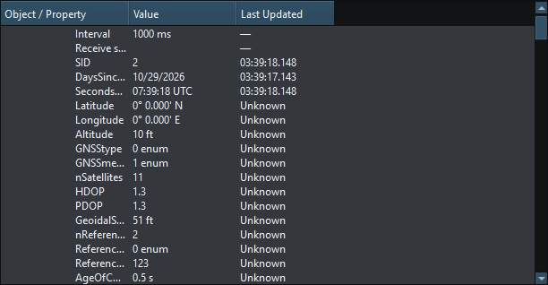

Object Tree is a read-only navigation and display view of the live workspace. It is useful when several widgets look alike or a source is updating a property too quickly to inspect on its face.
Tree formatting follows field-specific display precision and preferred units. Engine load and torque show field-specific precision; temperatures, depths, headings and distances have their own rules. This does not change canonical values, serialized Layouts, encoders or Signal K publication.
Unavailable time and distance display as Unavailable; valid zero remains a measurement. Last Updated shows the latest recorded property change. If it is old, inspect connection status and Diagnostics to check whether data is still arriving.
Multiple widgets with the same message title can be correct when source or instance differs. Do not merge them merely to make the tree shorter. Saved RX Layouts preserve representative values and identity context for simulation; they do not maintain a remote subscription after loading.
If tree and instrument disagree in meaning after a change, inspect canonical Property Editor data and the active source. A few fewer decimal places are expected; a different unit or a numeric unavailable sentinel is not ordinary rounding.

Figure 25. Expanded Object Tree properties show formatted values and source/instance distinctions. Click to enlarge.
Main Window · Instruments and Generators · Layout Management · Templates · Property Editor · Themes and Appearance · Keyboard Shortcuts · Connection Troubleshooting · Enable, Dispatch and Sending · Route Overview · Engineering Units